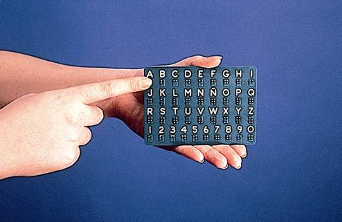
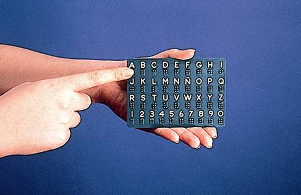

Grupos de Personas Sordociegas
El sistema de comunicación que cada persona usa para transmitir sus pensamientos, ideas, emociones y sentimientos está íntimamente ligado a la situación personal que esta ha experimentado en el transcurso de su vida, por lo tanto, no se puede pretender que todas las personas tengan uniformidad en el sistema de comunicación utilizado, además no todos los individuos cuentan con las mismas habilidades y capacidades personales, ni las mismas oportunidades educativas, familiares y sociales que les permitan conseguir buenos niveles de aprendizaje y acceso a la formación.
El sistema de comunicación está ligado a la
experiencia personal.
No todas las personas tienen
las mismas habilidades, oportunidades educativas o sociales.
Grupo 1:
Congénitas o tempranas
Personas sordociegas de nacimiento o que adquirieron la sordoceguera a temprana
edad.
Presentan problemas adicionales por incomunicación o discapacidades asociadas.
Grupo 2:
Adquiridas
Personas que tuvieron visión/audición normal durante la infancia y la perdieron
progresivamente.
Prefieren usar restos sensoriales mientras sea posible.
Sistemas de comunicación usados por las personas sordociegas
Explora los diferentes sistemas organizados en categorías. Haz clic en cada pestaña para aprender más.
Los sistemas alfabéticos son los que están basados en el deletreo, cada letra del alfabeto tiene una representación, generalmente se ejecuta sobre la palma de la mano, en la cual se transcribe letra a letra el contenido del mensaje, guardando la estructura propia de la lengua oral. Se requiere que la persona sordociega tenga una buena capacidad de síntesis para integrar las palabras del mensaje y una buena capacidad de discriminación táctil. Puede ser utilizado como sistema de comunicación habitual o como sistema de apoyo, generalmente para expresar nombres o palabras que no tienen una seña definida.
Es importante tener en cuenta:
✔️ Se debe preguntar a la persona sordociega en que mano desea recibir la información.
✔️ La velocidad del deletreo dependerá de las condiciones sensoriales de cada persona sordociega, su
habilidad y fluidez en el sistema, etc.
En ocasiones el hacer una pequeña pausa entre las palabras
le
facilitará la discriminación de estas.
✔️ No se usan acentos ni signos de puntuación, a no ser que se quieran utilizar como un elemento para
dar
énfasis a la comunicación.
✔️ Se utilizan signos de interrogación o admiración, porque dan una información necesaria para la
comprensión y contextualización del mensaje.
Dependiendo de acuerdos con cada persona, puede
incluirse
más información (paréntesis para indicar que es un comentario aparte, etc.).
Este sistema generalmente lo usan las personas sordociegas que primeramente han tenido pérdida auditiva y son usuarios de la lengua de señas, luego al irse deteriorando su visión, continúan utilizando la lengua de señas adaptada a su pérdida visual, y el sistema dactilológico en el aire como apoyo, es así como este sistema se puede realizar en varias versiones:
Sistema dactilológico visual en el aire
El interlocutor debe Colocarse de frente a la persona sordociega a la distancia que esta pueda percibir, cuidado de no mover mucho la mano al deletrear, para mantenerse dentro de su campo de visión. La velocidad de ejecución de cada letra está determinada por las características del resto visual, fluidez y habilidad de deletreo de cada persona sordociega.

Sistema dactilológico visual-táctil
Como en el caso anterior el interlocutor realiza el alfabeto dactilológico (Siguiendo las mismas recomendaciones de ubicación y fluidez) en el aire y la persona sordociega va tocando y reconociendo cada una de las letras con su mano.

Sistema dactilológico táctil o en palma
Se realiza el alfabeto dactilológico, teniendo en cuenta la configuración y ubicación total de cada letra sobre la palma de la mano de la persona sordociega, para que esta pueda captarlas táctilmente. Las letras que se emplean en la versión táctil son similares a la visual, pero con algunas modificaciones en su configuración o ejecución que favorecen una mejor discriminación táctil.

Las letras utilizadas pueden ser mayúsculas o minúsculas, según la preferencia de la persona sordociega.
Se puede escribir en el aire, sobre la palma de la mano de la persona con sordoceguera, la del interlocutor o sobre una superficie plana.

Es un método de lectoescritura a través del tacto que utilizan
las personas ciegas.
En el caso de
las personas sordociegas que lo conocen y lo utilizan, el braille no se limita solo a eso, sino
que puede convertirse en un sistema alternativo de comunicación, se trata de aprovechar el
conocimiento que tiene la persona sordociega de este sistema para aplicarlo a la transmisión de
mensajes y a la interpretación.
El interlocutor deletrea el contenido de lo que desea
comunicar
letra a letra, utilizando las correspondencias de cada letra del alfabeto con el sistema braille
sobre la mano de la persona sordociega.


Los sistemas de comunicación no alfabéticos consisten en la transmisión de una palabra o una idea completa a través de una seña, por lo que suelen suponer una transmisión más rápida de los mensajes que los sistemas alfabéticos. Pueden ser recibidos por la persona sordociega por el canal visual o el táctil.
Lengua de señas
Las personas sordociegas utilizan la misma lengua de señas que la comunidad sorda, pero con una serie de adaptaciones que se deben realizar en concordancia a los restos visuales que cada persona posea.
Lengua de Señas en campo visual
Se realiza una serie de adaptaciones que modifican esta forma de comunicación para que sea más fácilmente perceptible por la persona sordociega a través de su canal visual, ya que la distancia entre la persona ciega y el interlocutor se hace más reducida, así mismo se hace la producción de las señas dentro de su campo visual.

Lengua de Señas táctil o apoyada
En este sistema la persona sordociega «cuelga» sus manos de las manos de su interlocutor, colocándolas sobre el dedo índice, tocando directamente la configuración de los signos, percibiendo el lugar y la orientación y siguiendo el movimiento de las manos.

Este grupo de sistemas consiste en la transmisión de los mensajes a través de la lengua oral, con distintas adaptaciones, que es percibida por la persona sordociega a través de distintos canales de comunicación: el auditivo, el visual o el táctil.
Lengua oral adaptada
Consiste en emitir los mensajes en lengua oral para que sean
percibidos por la persona
sordociega a través de sus restos auditives.
El interlocutor deberá estar muy atento para amoldarse a las necesidades individuales de cada
persona. Este se ubicará del lado del oído con mayor resto auditivo, a la distancia que necesite
la persona sordociega para percibir el sonido, hablar con un volumen un poco más elevado de lo
normal, haciendo uso de buena vocalización a una velocidad moderada dependerá de las necesidades
concretas de cada persona
.

Lectura labial
La lectura labial consiste en leer, a través del movimiento de los
labios de la persona que habla, las palabras que emite. Para ello, la persona que recibe el
mensaje debe tener un elevado conocimiento de la lengua oral y buena fluidez en el uso del
sistema.
Este sistema presenta una serie de dificultades, incluso para la persona más competen te, ya que
algunos estudios consideran que solo se es capaz de leer en los labios alrededor de un 30% de la
información, perdiéndose un 70%.

Tadoma
Este sistema tiene como objetivo la percepción de la lengua oral a través del tacto. La persona sordociega coloca los dedos de una o ambas manos sobre la boca, cara y gar ganta del interlocutor, de manera que pueda notar el movimiento de los labios, los maxilares y las vibraciones producidas por la salida del aire en la cara y cuello cuando está hablando.

Estos sistemas utilizan la escritura, ya sea en caracteres ordinario o con el método braille para transmitir los mensajes dependiendo de sus restos visuales y de su conocimiento del braille utilizarán una u otra versión
-
Escritura en caracteres ordinarios en papel
Consiste en transmitir a la persona sordociega aun con restos visuales los mensajes de forma escrita con el alfabeto ordinario en un papel.
El interlocutor tendrá que ir haciendo pausas, acercarle el papel a la persona sordociega y tener en cuenta:
👉🏼 Seleccionar el grosor del trazo.
👉🏼 Elegir el color de la tinta y el color del papel para el adecuado contraste entre estos.
👉🏼 El tamaño y tipo de la letra.
👉🏼 Es importante tener en cuenta la separación entre renglones. -
Escritura en caracteres ordinarios a través de medios técnicos
Algunas personas sordociegas prefieren leer los mensajes no sobre un papel, sino sobre la pantalla de un computador/Tablet.
En esta situación, el interlocutor va escribiendo el mensaje con el teclado ordinario del ordenador y la persona sordociega está sentada a su lado, leyendo directamente de la pantalla, a la distancia que ella misma considere necesaria. -
Escritura en braille en papel o a través de medios técnicos
Este sistemaConsiste en transmitir a la persona sordociega los mensajes utilizando el sistema de lectoescritura Braille a través del papel, el computador u otras ayudas técnicas.
Son una serie de recursos que están a disposición de las personas sordociegas para momentos concretos de contacto con personas que desconocen sus sistemas habituales de comunicación, como pueden ser en caso de necesitar ayuda en situaciones de emergencia, para mensajes breves, para situaciones desconocidas, con los compañeros de trabajo, etc.
Tablillas de comunicación
Son unas tablillas rígidas que en una de sus caras llevan impresas
en relieve las letras del
alfabeto bien contrastadas con el fondo.
En una de las modalidades figura el alfabeto
ordinario
y, en otra, las letras del alfabeto ordinario con su correspondiente letra en braille debajo.
La persona sordociega va deletreando el mensaje, señalando sucesivamente las letras sobre la
tablilla con su dedo índice, de forma que el interlocutor va leyendo el mensaje.
Para
responderle, la otra persona toma el dedo de la persona sordociega y lo va llevando por la
tablilla.

 

Tarjetas de comunicación
Esta forma de apoyo consiste en unas tarjetas, elaboradas
generalmente con cartulina o algún
material consistente, que llevan mensajes impresos preparados previamente para comunicar
mensajes puntuales a otras personas.
Si la persona sordociega que las maneja no tiene
ningún
resto visual y conoce el sistema braille, pueden llevar una pequeña marca escrita en este
sistema en una de las esquinas.
El tipo de mensajes que suelen llevar impresos son para situaciones variadas, como, por ejemplo,
para cruzar la calle: «Soy una persona sordociega. Por favor, ayúdeme a cruzar la calle
tomándome del brazo».
Mensajes breves en caracteres ordinarios o en braille
La escritura en caracteres ordinarios es muy útil para la
transmisión de mensajes breves a
personas que desconocen los sistemas de comunicación con las personas sordociegas.
Para
este
efecto, la persona sordociega lleva consigo una libreta o un papel y un bolígrafo de los que
echa mano en caso de necesidad.
La persona sordociega debe aprender a tener en cuenta que el mensaje que escriba debe ser claro
y directo, de forma que de opción a una sola respuesta posible para evitar confusiones.

Dibujos
Se trata de transmitir los mensajes a través de dibujos más o
menos complejos, como forma de
apoyar la comunicación con alguna persona sordociega que no domine un sistema de comunicación
completo, por falta de rehabilitación o con una situación personal muy peculiar.
También
puede
utilizarse con personas sordociegas de bajo nivel cultural que tengan dificultades en un momento
dado para comprender un concepto que se le esté transmitiendo.
Dactyls
Este método se basa en la utilización del sistema dactilológico
táctil junto con elementos
tomados de la lengua de señas, realizados sobre la palma de la mano o brazo de la persona
sordociega y adaptados para permitir una fácil captación a través del tacto.
El mensaje se
va
transmitiendo letra a letra con el sistema dactilológico y se sustituye el deletreo de algunas
palabras por su signo correspondiente.
Bimodal
Este sistema consiste en el empleo de la lengua oral acompañada de señas tomadas de la Lengua
de Señas.
Puede ir complementado con algunas marcas especificas inventadas para el caso.
No se
trata del uso de dos lenguas: la oral y la de señas, ya que ambas tienen una estructura y unos
recursos muy diferentes: la estructura básica es la de la lengua oral y se utilizan las señas
para ayudar a visualizar y comprender los mensajes.